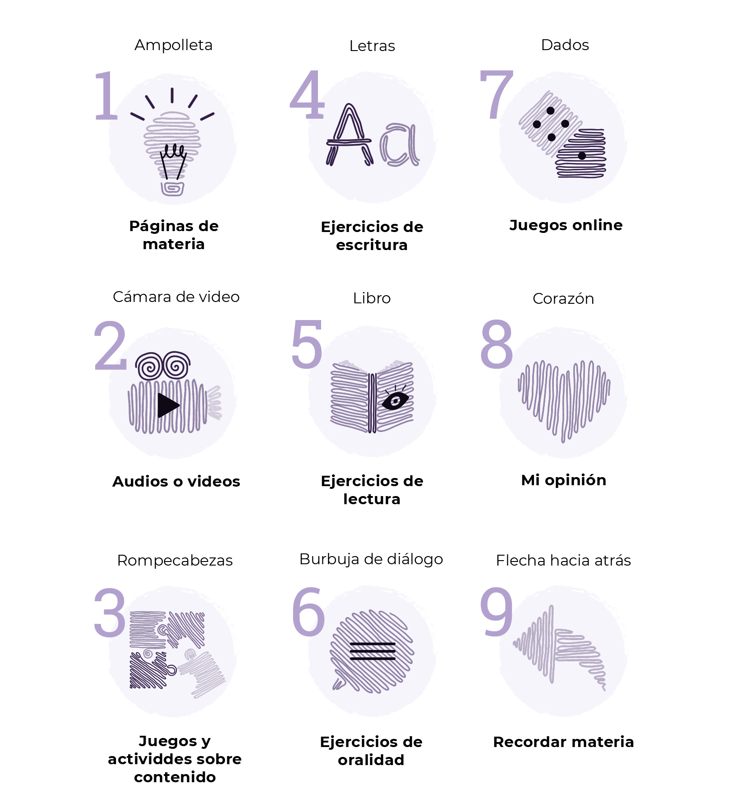

Toma mi mano y escribamos juntos
Sobre los cuadernillos
¡Hola! Me presento, soy Nunito. Te voy a acompañar a lo largo de esta edición.
Con estos cuadernillos se plantea la importancia de la escritura manual acompañada de momentos digitales, por lo que se propone que este material contenga materia, mapas conceptuales y ejercicios que se apoyan con juegos online vinculados por medio de códigos QR/links. Además, este cuadernillo estaría inserto en una carpeta que genere un espacio de trabajo que se compone de una sección para el cuadernillo junto a un espacio para apuntes.
Recursos
A continuación se presentarán los momentos y espacios que componen los cuadernillos.
Simbología
En cada página se verá un icono que representa un momento en el cual uno estará inserto.
Espacios de trabajo
Para los espacios de escritura se presentan diferentes contextos para ayudarte a expresarte mejor.
.png)

Nunito
Soy personaje que acompaña al estudiante durante toda la edición. Surgo debido al análisis de los resultados de la sonda a los alumnos/as, ya que muchos de ellos expresaron que les gusta sentirse acompañados durante sus clases pero muchas veces este acompañamiento físico no ocurre, además de soy una recomendación de las estudiante de educación especial.
.png)